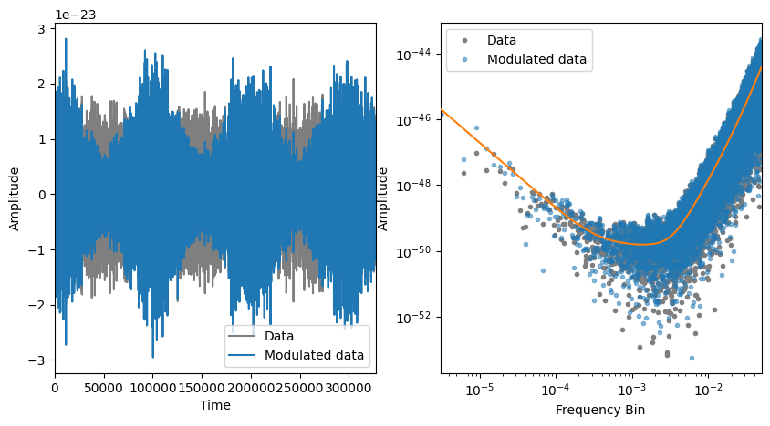
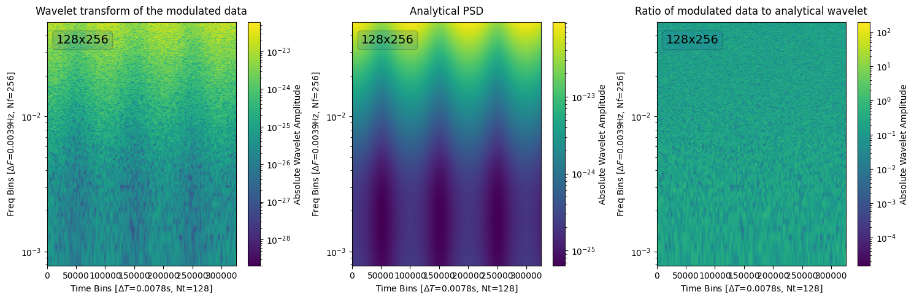

Noise in the wavelet domain#
%load_ext autoreload
%autoreload 2
import matplotlib.pyplot as plt
import numpy as np
from scipy import stats
from pywavelet.utils.lisa import lisa_psd_func
from pywavelet.psd import generate_noise_from_psd
from pywavelet.transforms.types import TimeSeries, FrequencySeries
DATA_COL = "tab:gray"
TRUE_COL = "tab:orange"
np.random.seed(1234)
1) Evolutionary PSD#
Lets assume that an evolutionary spectrum is given by
\(S(t, f) = S_{n}(f) \left(1 + \alpha \cos(2 \pi f_0 t)\right)^2\)
We use the LISA PSD as the noise spectrum \(S_{n}(f)\) and we assume that the noise is modulated by a cosine function with amplitude \(A\), frequency \(f_0\).
One can generate a stationary time series with PSD \(S_n(f)\) and multiply this by some time-varying function \(g(t)\) and this gives you a time series with an amplitude-modulated spectrum \(g(t)S_n(f)\),
Generate a time series with a modulated spectrum#
# Apply a modulation to this noise
A_TRUE = 1.0 # 5e-21
F_TRUE = 1e-5
ALPHA_TRUE = 0.5
modulation = lambda t: A_TRUE * (
1 + ALPHA_TRUE * np.cos(2 * np.pi * F_TRUE * t)
)
tmax = 120 * 60 * 60 # Final time
fs = 0.1 # Sampling rate
delta_t = 1 / fs # Sampling interval -- largely oversampling here.
n_data = 2 ** int(np.log(tmax / delta_t) / np.log(2))
data = generate_noise_from_psd(lisa_psd_func, n_data=n_data, fs=fs)
data_modulated = TimeSeries(
data=data.data * modulation(data.time), time=data.time
)
prdgm = FrequencySeries.from_time_series(data)
prdgm_modulated = FrequencySeries.from_time_series(data_modulated)
true_psd = lisa_psd_func(prdgm.freq)
fig, axes = plt.subplots(1, 2, figsize=(10, 5))
_, ax = data.plot(rasterized=True, color=DATA_COL, label="Data", ax=axes[0])
data_modulated.plot(
ax=ax, rasterized=True, color="tab:blue", label="Modulated data"
)
ax.set_xlim(data.time.min(), data.time.max())
_ = ax.legend()
fig, ax = prdgm.plot(
rasterized=True, marker=".", lw=0, color=DATA_COL, label="Data", ax=axes[1]
)
prdgm_modulated.plot(
ax=ax,
rasterized=True,
color="tab:blue",
label="Modulated data",
marker=".",
lw=0,
alpha=0.5,
)
ax.plot(prdgm.freq, true_psd, color=TRUE_COL, zorder=10)
ax.set_xlim(prdgm.freq[1], prdgm.freq.max())
_ = ax.legend()

Wavelet transform of the modulated data#
from pywavelet.transforms import from_time_to_wavelet
from pywavelet.transforms.types import Wavelet
# Size of the data
ND = len(prdgm_modulated)
tobs = prdgm_modulated.duration
# timeseries = TimeSeries(data=data_noise_mod, time=tobs)
# We know that the data varies slowly with f_true
# The durations where the process is approximately stationary should be
# much smaller than t_true = 1/f_true
# If we pick dt = t_true / 10
q = int(np.log(n_data) / np.log(2))
qf = int(q / 2) + 1
Nf = 2 ** (qf)
Nt = 2 ** (q - qf)
mult = 32
K = mult * 2 * Nf
# Here are
df = Nt / (2 * tobs)
dt = tobs / Nt
print(
f"Duration which the process is approximately stationary is {1 / F_TRUE / 10:,.2f}"
)
print(f"ND: {ND:,}, Nf: {Nf}, Nt: {Nt}, Nf * Nt: {Nf * Nt:,}")
print(f"dt={dt}, df={df}")
Duration which the process is approximately stationary is 10,000.00
ND: 16,384, Nf: 256, Nt: 128, Nf * Nt: 32,768
dt=2560.0, df=0.0001953125
# data wavelet transform
data_wavelet = from_time_to_wavelet(data_modulated, Nt=Nt, nx=4.0, mult=mult)
# analytical PSD
tn = data_wavelet.time.data
fm = data_wavelet.freq.data
stf = np.sqrt(
np.dot(
np.asarray([modulation(tn) ** 2]).T, np.asarray([lisa_psd_func(fm)])
)
).T
analytical_wavelet = Wavelet.new(data=stf, time=tn, freq=fm)
# look at ratios
ratios = np.sqrt(
np.abs(data_wavelet.data) ** 2 / np.abs(analytical_wavelet.data) ** 2
)
ratios = Wavelet.new(data=ratios, time=tn, freq=fm)
fig, axes = plt.subplots(1, 3, figsize=(15, 5))
kwgs = dict(
absolute=True, zscale="log", freq_scale="log", freq_range=(4 * df, None)
)
_, ax = data_wavelet.plot(ax=axes[0], **kwgs)
_ = ax.set_title("Wavelet transform of the modulated data", y=1.01)
_, ax = analytical_wavelet.plot(ax=axes[1], **kwgs)
_ = ax.set_title("Analytical PSD", y=1.01)
_, ax = ratios.plot(ax=axes[2], **kwgs)
_ = ax.set_title("Ratio of modulated data to analytical wavelet", y=1.01)

Histogram of the ratios of the modulated data to the analytical wavelet#
iok = np.where(fm >= 4 * df)
# filter the data_noise_mod_w and the analytical_wavelet frequencies to keep only the positive frequencies
d = data_wavelet.data[iok, :]
a = analytical_wavelet.data[iok, :] ** 2
# d = data_wavelet.data
# a = analytical_wavelet.data ** 2
amp_ratios = d / np.sqrt(a * fs / 2)
# plot the ratios
x = np.linspace(-3, 3, 100)
plt.figure(0)
plt.hist(
amp_ratios.flatten(), density=True, bins=100, histtype="step"
) # , range=[0, 0.5])
plt.plot(x, stats.norm.pdf(x), ls="--")
plt.xlabel(r"$\frac{\sqrt{|w_{nm}| \tau_s}}{S_{x}(f_m, t_n)}$")
plt.show()